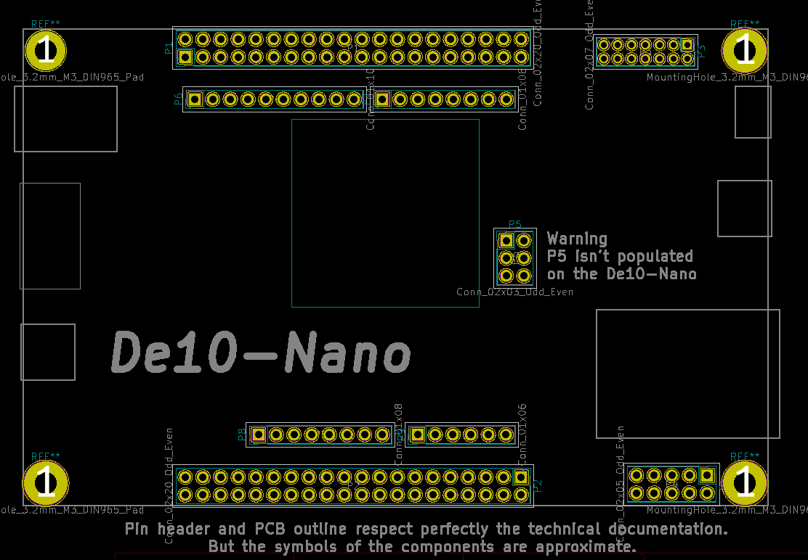

This project template is the basis of an expansion board for the
De10-Nano Kit
This base project includes a PCB edge defined
as the same size as the De10-Nano PCB with the connectors placed
correctly to align the two boards. All IO present on the De10-Nano
board is connected to the project through the 0.1" expansion
headers.
The board outline looks like the following:

(c)2019 Sansors